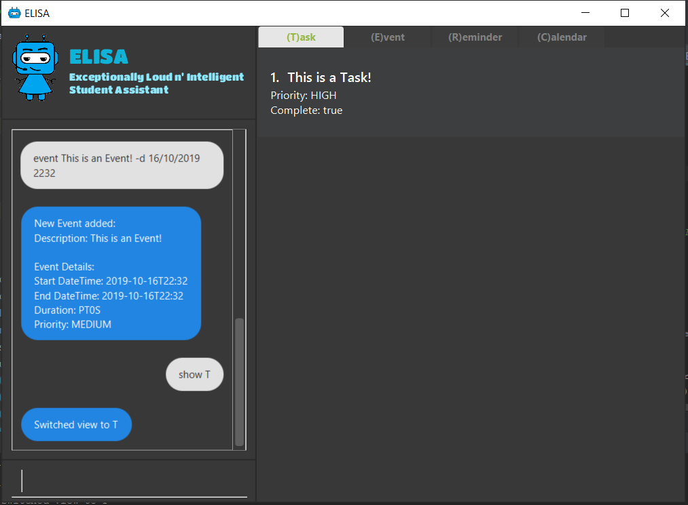

By: AY1920S1-CS2103T-T10-3 Since: Sep 2019 Licence: NUS
- 1. Introduction
- 2. Quick Start
- 3. Features
- 3.1. Viewing help :
help - 3.2. Adding a task:
task - 3.3. Adding an event:
event - 3.4. Adding a reminder:
reminder - 3.5. Show the specified category :
show - 3.6. Editing an item :
edit - 3.7. Deleting a reminder/task/event :
delete - 3.8. Undoing the latest command(s) :
undo - 3.9. Exiting the program :
exit - 3.10. Saving the data
- 3.11. Encrypting data files
[coming in v2.0]
- 3.1. Viewing help :
1. Introduction
Extremely Loud and Intelligent Student Assistant (ELISA) is for students who wants to have an intelligent companion that keeps track of tasks and give friendly reminders on when to take breaks. More importantly, ELISA is optimized for those who prefer to work with a Command Line Interface (CLI) while still having the benefits of a Graphical User Interface (GUI). If you can type fast, ELISA can get your tasks done faster than traditional GUI apps. Interested? Jump to the Section 2, “Quick Start” to get started. Enjoy!
2. Quick Start
-
Ensure you have Java
11or above installed in your Computer. -
Download the latest
elisa.jarhere. -
Copy the file to the folder you want to use as the home folder for ELISA.
-
Double-click the file to start the app. The GUI should appear in a few seconds.
 -
Type the command in the command box and press Enter to execute it.
e.g. typinghelpand pressing Enter will open the help window. -
Some example commands you can try:
-
list: lists all tasks -
delete3: deletes the 3rd item shown in the current list -
exit: exits the app
-
-
Refer to Section 3, “Features” for details of each command.
3. Features
Command Format * Words in UPPER_CASE are the parameters to be supplied by the user e.g. in add -td, DESCRIPTION is a parameter which can be used as add -td bathe. * Items in square brackets are optional e.g -td DESCRIPTION [-t TAG] can be used as -td bath -t home or as -t bathe. * Items with … after them can be used multiple times including zero times e.g. [-t TAG]… can be used as (i.e. 0 times), -t friend, -t friend -t family etc. * Parameters can be in any order e.g. if the command specifies -td DESCRIPTION -t TAG, -t TAG -td DESCRIPTION is also acceptable.
3.1. Viewing help : help
Format: help
3.2. Adding a task: task
Adds a task to the task list
Format: task DESCRIPTION [-d DATETIME] [-r REMINDER] [-p PRIORITY] [-t TAG]…
| A task can have any number of tags (including 0) |
Examples:
-
task eat my vitamins -
task eat my vitamins -r at 2pm -
task eat my vitamins -d by midnight -p low -t healthy
3.3. Adding an event: event
Adds an event to events list and calendar
Format: event DESCRIPTION -d DATETIME [-r REMINDER] [-p PRIORITY] [-t TAG]…
| An event can have any number of tags (including 0) |
Examples:
-
event John’s Birthday -d 20/09/2019 -
event John’s Birthday -d 20/09/2019 -r at 2pm -
event John’s Birthday -d 20/09/2019 -p high -t friend
3.4. Adding a reminder: reminder
Adds a reminder to the reminder list
Format: reminder DESCRIPTION -d DATETIME [-p PRIORITY] [-t TAG]…
| A reminder can have any number of tags (including 0) |
Examples:
-
reminder John’s Birthday -r 19/09/2019 14:00 -
reminder John’s Birthday -r 19/09/2019 14:00 -p high -t friend
3.5. Show the specified category : show
Shows the specified category. For example show -t will show the tasks list and show -e will show the events list. The view will be toggled between the respective pages. Format: `show [-t] [-e] [-c] [-r] (at least one and only one flag must be used with this command)''
Examples:
-
show -t -
show -e -
show -r -
show -c
3.6. Editing an item : edit
This command is used to edit any of the items that you might have. However, you are only able to edit the item when the list is currently in view. For example, you are able to edit a task when the current view is that of the task list as index is used to reference the item. However, you are not able to edit a task for the event list.
+
Format: edit INDEX [-td DESCRIPTION] [-ed DESCRIPTION] [-rd DESCRIPTION] [-d DATETIME] [-r REMINDER] [-p PRIORITY] [-t TAG]…
Examples:
-
edit 1 -td read books -d by tmr
Edits the task description and deadline of the 1st task to beread booksandby tmrrespectively. -
edit 3 -ed CS2103 team meeting -p high
Edits the event description and the priority of the 2nd event to beCS2103 team meetingandhighrespectively.
3.7. Deleting a reminder/task/event : delete
Deletes the reminder/task/event from the ELISA.
Format: delete INDEX
Examples:
-
show -r
delete 2
Deletes the 2nd reminder in the shown reminder list.
3.8. Undoing the latest command(s) : undo
Reverts the latest commands given on the ELISA.
Format: undo [number of commands]
Examples:
-
undo
Undoes the last command -
undo 2
Undoes the last 2 commands
3.9. Exiting the program : exit
Exits the program.
Format: exit
3.10. Saving the data
ELISA saves the data in the hard disk automatically after any command that changes the data. There is no need to save manually.
3.11. Encrypting data files [coming in v2.0]
{explain how the user can enable/disable data encryption}